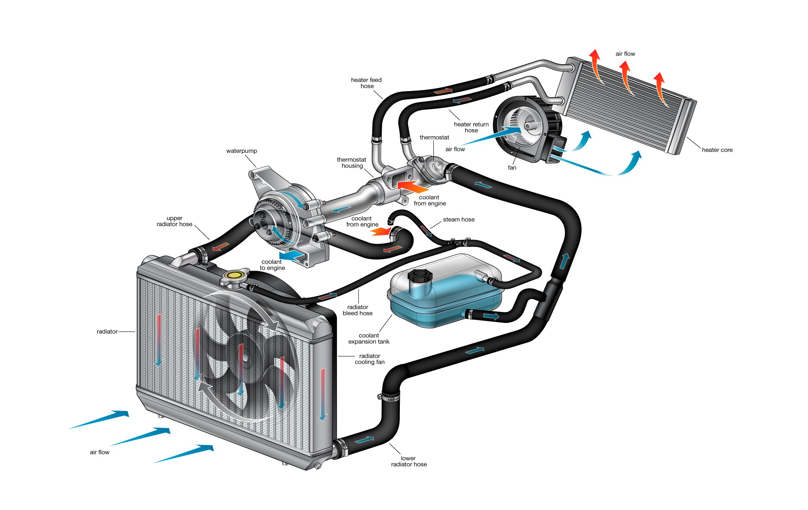
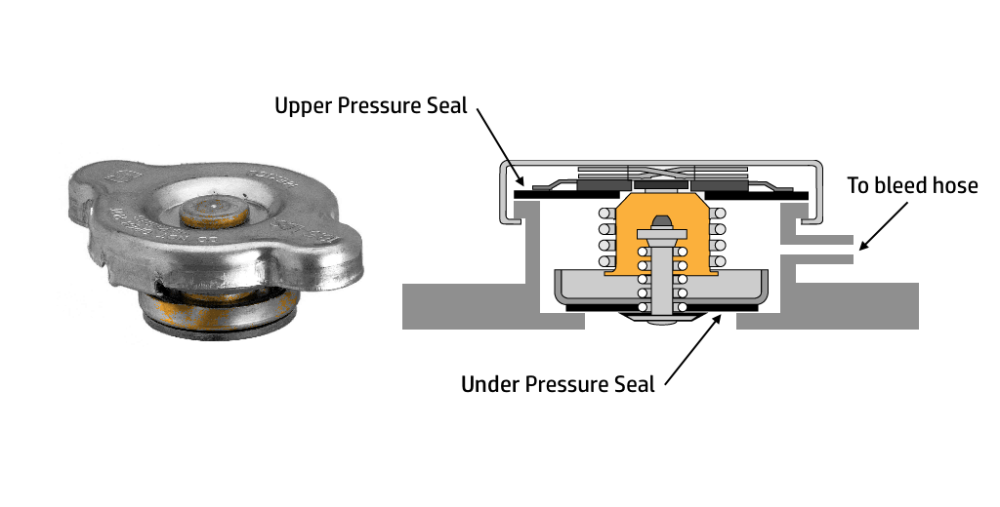
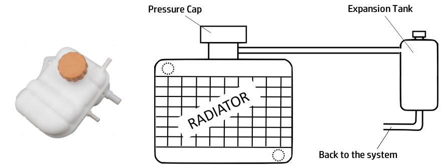

This article is a part of a series of articles in automobile engineering. As we have discussed earlier about two other components in the engine cooling system of your car, this article discusses about the third one, the Radiator. You may find the links to older articles about the engine cooling system here.

Hot water is cooled inside the radiator. There are a lot of tiny tubes made of thin metal sheet inside the radiator core. These tubes are designed to pass water effortlessly. Water is passed from top of the radiator to the bottom. While the engine is running, a fan fitted right behind the radiator sucks cold air from the environment, allowing the air to pass alongside these tiny tubes in the radiator, resulting in cooling down the water inside the tubes.

Radiator cap is a special design. It is a combination of a vacuum valve, pressure valve, filler, cap seat and an overflow pipe to the bleeding hose. When the under pressure seal is in place, the pressure inside the radiator core increases as the water warms up. When the pressure goes beyond a threshold, the water pushes the under pressure seal, and it overflows through the bleed hose and gets collected in the expansion tank. When system cools down, the pressure inside the system goes down again, and the water collected in the expansion tank is goes back into the system through a pipe at the bottom of the expansion tank.
Radiator core is, as explained above, a packed structure of tubes and thin metal sheet elements to enhance the cooling process. The thin sheet structures directs the air into and around the thin tubes which contains the water. There are many types of design followed by different manufacturers. The front grill of the car is also designed in such a way that the air effortlessly passes through the radiator core. It is very important that when cars are customised, the air flow is affected just to the minimum. Try to avoid equipments like extra fog lamps, or blow horns, or guard rails being fitted directly in front of the grill, so as the airflow is obstructed. Generally, the core gets clogged by small sediments and particles in the coolant over time. This results in less cooling efficiency, because the water flow is obstructed. It is suggested to do a radiator core reverse flushing every 25000 kilometres. Reverse flushing is a simple process, where you extract the radiator core, and pump water and air in the reverse direction, ie through the bottom outlet to the upper outlet. This will displace deposits, and it gets out of the core through the upper vent along with the water and air. Another common issue is radiator core leak. This is often not repairable, and core replacement may be the only way.

The expansion tank is a plastic container which collects excess water from the system through the overflow bleeding hose. This tank is generally an unpressurised one, and the water collected here gets a lot of time to get cooled.
In modern cars, the radiator core might not have a pressure cap. Rather the expansion tank will be a part of the system and it will be pressurised. So, you have to be careful while opening the expansion tank cap in modern cars. Read your cars maintenance manual thoroughly before proceeding.
Expansion tank also may get deposits collected at the bottom. It is a good idea to flush it as well, when you can visibly see the tank being not very clean. Also make sure the coolant level is always as marked on the expansion tank. This is important to bring balance to the cooling system. Some mechanics fills the expansion tank with plain water instead of coolant. This completely incorrect, as the coolant in the system gets mixed with water and brings down the boiling point of the coolant. Always use correct grade coolant in your cars cooling system.